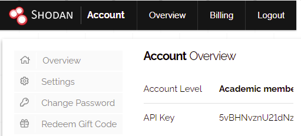
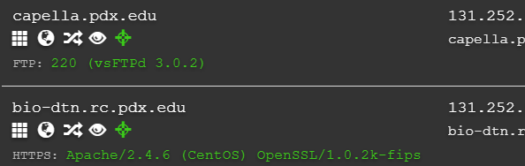
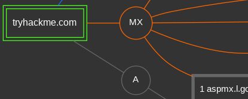

The prior lab focused on identifying activity based on an IP address. When adversaries target organizations, however, they will go beyond this and examine the OSINT information involving users and DNS data. In this lab, we'll examine additional tools for gathering such public data.
Many reconnaissance frameworks have support to query the Shodan service to obtain intelligence information. In order to use Shodan in this lab, first set up an account on the site by visiting https://account.shodan.io/register and creating an account. Shodan supports a free-tier of usage that allows users a limited number of queries per day per account. After account creation, log into the account and view it in order to get your Shodan API key. Keep the browser window up as you will need to copy your key in later parts of the lab.

recon-ng is a Python-based framework that supports a marketplace containing a variety of modules for performing reconnaissance on a given organization. It implements a common database for all of the modules to store the results of their runs within so an analyst can maintain a global view of the information collected.
We will first use it to enumerate the users and machines that an organization has exposed through search engines. To begin with, bring up the Kali VM. While one could clone the tool from its source repository (https://github.com/lanmaster53/recon-ng), the Kali distribution comes pre-packaged with a version of it that we'll use instead. From the command-line, launch the tool.
recon-ngModules must be installed and loaded into recon-ng explicitly. To find modules to use, run the marketplace command below within the tool. (Note that the tool supports tab completion, allowing you to bring up the command via "ma".
marketplace searchAlong with the name of each module, the output indicates when it was last updated and whether or not one needs an API key to use the module.
Attackers will often seek out vulnerable hosts in an organization to attack in order to gain initial access in an organization. There are a number of recon-ng modules that collect such hosts and their addresses. We will run several of these modules and examine the results returned. The first are sites that show up from search engine indexing. Perform a search on domains-hosts to see the modules that are available related to it.
marketplace search domains-hostsThen, install the bing_domain_web module using its path (filling in the missing information in the command):
marketplace install recon/.../bing_domain_webAfter installing it, load the module:
modules load recon/.../bing_domain_webModules typically have a set of options that you can view via
options listIn the case of this module, a "SOURCE" option needs to be set in order for one to specify which organization to collect information on. Specify the domain of the school using the command below.
options set SOURCE pdx.eduThen, run it.
runThe command will save these results into the database under a table called hosts including the URLs of the profiles.
show hosts" and take a screenshot that includes several of the results for your lab notebook.To exit out of the module, use the command below:
backAnother way to collect hosts within an organization is through certificate transparency reports. Certificate authorities (CAs) are trusted entities that can digitally sign TLS certificates of web sites, allowing the browser to verify that the site you're communicating with is legitimate. Unfortunately, when CAs themselves are compromised, adversaries can sign site certificates of arbitrary web sites. One way to protect against such attacks is to force all CAs to publish the certificates they have signed before a browser uses it. Such transparency prevents a compromised CA from generating fake certificates without anyone seeing it.
One drawback of transparency, however, is that an adversary can use the reports to enumerate an organization's sites that have had certificates issued. recon-ng contains a module for doing so, given a domain.
recon/domains-hosts/certificate_transparency module.pdx.edu . This will search for any hosts within our school's domain.run the command. The command will output profiles that it finds that use this name.options set TIMEOUT 15, reload the module, and then run it again. The command will save any new results into the hosts table as well.
show hosts" and take a screenshot that includes several of the results for your lab notebook.Among other services for identifying vulnerable accounts and hosts, the Shodan search engine provides a host discovery module that uses a combination of techniques to identify potential targets in an organization. In our final method for performing host reconnaissance, we'll be using the Shodan module that is built-in to recon-ng.
recon-ng, add the key via the command below:keys add shodan_api <Shodan_API_Key>
recon/domains-hosts/shodan_hostname module.pdx.edu . This will search for any hosts within our school's domain.run the command. The command will output profiles that it finds that use this name.Ctrl+c".The command will save any new results into the hosts table as well. If it does not return new host, you may need to exit recon-ng and restart.
show hosts" and take a screenshot that includes several of the results for your lab notebook.knockpy is a Python-based brute-force subdomain enumeration tool that can identify hosts that are not indexed by search engines or have TLS certificates issued to them. Given a domain name to enumerate, it goes through a dictionary of common subdomain names and provides a JSON summary of which ones resolve. Note that some sites employ wild-card DNS records (*) which will render the tool useless.
The script can be installed from its repository directly. On the Kali VM, clone the repository and set up a Python environment for it to utilize. Activate the environment and install its packages.
git clone https://github.com/guelfoweb/knock.git cd knock virtualenv -p python3 env source env/bin/activate pip3 install -r requirements.txt
Then, run the tool on pdx.edu to enumerate all of its subdomains. For any subdomains it finds, it will issue a web request to it in order to identify the web server distribution it is running. Note that many of the subdomains found resolve to Portland State's /16 network 131.252.0.0/16, indicating that they are hosted on campus.
python3 knockpy.py pdx.edu
Results of scans are contained in reports that are stored in the knockpy_report directory. Change into the directory and view the JSON file that contains the results. The filename will begin with pdx.edu and contain the timestamp the scan was performed. Answer the following questions:
alias section, what company provides the MediaSpace service for the university (media.pdx.edu)? Based on the domain and server sections, which CDN provider distributes the content?After obtaining reports, it is helpful to be able to process them programmatically, filtering and querying the results. While one could use Python scripts to process the JSON file, the jq tool provides a Linux command-line alternative that is often used. It provides a custom language for navigating and displaying JSON objects attributes. Install the tool on the Kali VM
apt install jq
The format of the JSON file we are given has keys named after each host the tool has found. Run the jq command below to just print out the keys.
jq 'keys[]' <JSON file>
Each key refers to a JSON object containing the key's attributes. We can use jq to iterate through the keys and print out the key and a particular attribute. Run the command below to print out the IP addresses associated with each key
jq 'keys[] as $k | "\($k), \(.[$k] | .ipaddr)"' <JSON file>
The output shows a number of machines that fall outside of the 131.252.0.0/16 prefix. This indicates that Portland State has delegated the operation of several of its sites to third parties. To get a listing of all pdx.edu sites hosted elsewhere, send the output to egrep and filter out the PSU prefix.
... | egrep -v 131.252
At this point, one can perform reverse IP address lookups to identify the provider of the service. However, DNS records often contain hints as to who manages the site. Repeat the command above, replacing the jq query to also print out the domain section of each key.
jq 'keys[] as $k | "\($k), \(.[$k] | .ipaddr) \(.[$k] | .domain)"' ...
Domain name analysis on large domains can be unwieldy. One useful site for aggregating and visualizing the results of an analysis is DNS Dumpster.
Visit DNS Dumpster at https://dnsdumpster.com/ and search for pdx.edu. View the host records that are returned. Note that because PSU has such a large number of machines, that the site limits the results for free users. Find a host running a software service whose version has been identified.
For example, the first host below is running vsFTPd version 3.0.2 while the second host is running Apache 2.4.6 with OpenSSL 1.0.2k-fips.

For the host and software that you choose
Search Google for any CVE that is related to the software and its version number (e.g, for the above, search for "CVE vsftpd 3.0.2")
Out-of-date and vulnerable software typically exists throughout an enterprise. Whether it is remediated will depend on its CVSS score.
We'll continue our use of DNS Dumpster, but use a smaller domain. Search for the domain name of the TryHackme site and examine its results.
View the graph representation of the results.

While DNS Dumpster provides a current snapshot of a running site, when performing any kind of forensic investigation, one might want to look at historical data. One rich set of historical records is provided by certificate transparency registries in which certificate authorities broadcast every certificate they issue. To access this database, visit https://crt.sh . Enter in tryhackme.com and view the domain's certificate history.
Repeat the search for pdx.edu.
Certificate histories are one part of the historical record that might be useful in an analysis. Another rich data source are services that log DNS record changes. The ViewDNS site supports a library of queries for investigating domain names and individual IP addresses. For our purposes, we're interested in seeing the history of the DNS name and its mapping over time. Visit its site and see the different queries at your disposal for collecting intelligence. One such query is the whois query you can run from the command line of your Kali VM. Perform a whois query on tryhackme.com (e.g. https://viewdns.info/whois/...)
Next, examine the history of the DNS mapping for tryhackme.com using the IP history query (https://viewdns.info/iphistory/...)
Repeat the two queries for pdx.edu
One of the first things an adversary or a penetration tester might do when targeting an organization is perform passive reconnaissance to identify potential people to attack. One of the best things a defender might do in response is to do the same in order to identify the people and machines that will likely be the target for an initial intrusion and to proactively protect them.
In this lab, we will use Open Source Intelligence approaches or OSINT to find potential targets. Begin by visiting a fictional corporation that has been set up to demonstrate open-source intelligence gathering: https://www.megacorpone.com. Our first step is to locate people that are typically targeted for attack. Such targets are often referred to as "Very Attacked People" or VAPs.
One VAP is a company's human resources department. Such employees are continuously opening up attachments that may contain executable code, making them an attractive target for phishing. For example, sending a resume that invokes a command-line script is very common and can be devastating if executed. Navigate the site.
Another VAP is a company's sales and accounts payable departments. Compromising accounts of users in those departments allows an adversary to perform Business E-mail Compromise (BEC) attacks in which payments are fraudulently routed to accounts the adversary controls.
Finally, another VAP is an employee with privileged access to a company's computing infrastructure. By compromising their credentials, an adversary can potentially compromise a large number of other employees as a result.
Modern enterprises utilize social media accounts for messaging and marketing purposes. Unfortunately, employees utilizing such outlets can accidentally reveal sensitive information. Navigate the company's site to find the Twitter feed for the marketing director of the company. Visit the feed and then examine the accounts that the director is following. Examining these accounts reveal a system administrator, the CEO, and a lead developer. It also reveals the account of an intern at the company. Interns often do not have the security training one would expect full-time employees might have. Visit the intern's Twitter account and examine the intern's tweets.
Many enterprises have employees that manage open-source software repositories. It is important that care is taken to ensure sensitive information is never exposed in them. Visit the Twitter feed for the lead developer for the company to find the company's Github account and the repository containing their web site. The web site utilizes XAMPP, a cross-platform web server stack containing an Apache front-end, a backend database and support for PHP. Find an XAMPP user file in the repository that contains a password hash.
Using hashcat or another hash identifying tool to find the type of hash.
As seen in prior labs, the Shodan search engine can reveal information about a site's infrastructure. If the site is using vulnerable versions of software, an adversary can then specifically target it with known exploits for the vulnerabilities it has. Using dig, find the IP address of the web site and perform a search for it on https://shodan.io .
Another tool that is useful for search engine mining is theHarvester. The tool is included in your Kali VM and supports a number of search engines. Bring the Kali VM up and run the following command that performs a search on Bing for e-mail addresses and machines that are associated with megacorpone.com.
theHarvester -d megacorpone.com -b bingThe tool reveals a list of e-mail addresses for the domain that have been found by the search engine.
crosslinked is a Python-based search engine scraper that attempts to enumerate all of the profiles of people within an organization. Given that organizations often have a specific format to their e-mail addresses (e.g.
We will be installing the tool directly from its repository. On a Ubuntu VM or the Kali VM, clone its repository and create a Python environment. Install the packages it requires.
git clone https://github.com/m8r0wn/crosslinked
cd crosslinked
virtualenv -p python3 env
source env/bin/activate
pip install -r requirements.txtRun the command below to invoke the script. The command attempts to find the profiles of all people on the LinkedIn social network that are affiliated with Portland State using the Google and Bing search engines. It then formats candidate e-mail addresses using a specified format and outputs it to the file names.txt .
python3 crosslinked.py -f '{first}.{last}@pdx.edu' 'Portland State' -o names.txtFor your lab notebook:
names.txtrecon-ng is a Python-based framework that supports a marketplace containing a variety of modules for performing reconnaissance on a given organization. On your Kali VM, bring the tool up.
recon-ngWe will use the tool to obtain the whois information of the school. In order to register domain names and obtain IP addresses, an organization must provide points of contacts (PoCs) that can be notified if any attacks originate from domains and addresses that they own. Such PoCs are some of the most "attacked people" in an organization since their accounts usually hold elevated network privileges in an organization. As a result, extra precautions must be taken to protect these accounts such as mandating their use of multi-factor authentication.
Perform a search on whois to see the modules that are available related to it.
marketplace search whoisThen, install the whois_pocs module using its path (filling in the missing information in the command):
marketplace install recon/.../whois_pocsAfter installing it, load the module:
modules load recon/.../whois_pocsModules typically have a set of options that you can view via
options listIn the case of this module, a "SOURCE" option needs to be set in order for one to specify which organization to collect information on. Specify the domain of the school using the command below.
options set SOURCE pdx.eduThen, run it.
runThe output of the command shows a number of employees that are part of the organization's network operations team. The results of the command are automatically stored in the tool's database in the contacts table. Use the show command to list the contacts.
show contactsTo exit out of the module, use the command below:
back